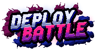
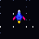

Desplegando en producción desde 2002
El lugar donde lo imposible se vuelve posible.
Estamos curtidos en mil deploys. Desde 2002 trabajando codo con codo con grandes marcas y empresas. No necesitas otro proveedor, necesitas un equipo comprometido, con experiencia y ambición. Somos diseñadores, desarrolladores, ingenieros de IA, data, SEO, GEO...
- Desarrollo de producto digital
- Automatización de procesos
- Integraciones con IA
- UX/UI y CRO
- Accesibilidad web